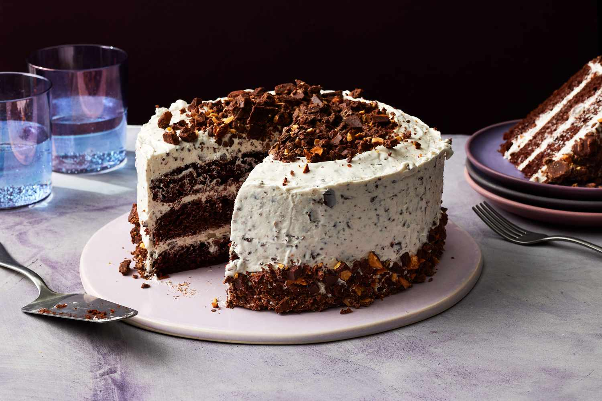
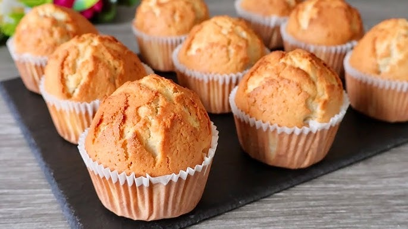

🥖 Bread 🥖

Bread stands as one of humanity's oldest prepared foods, with its roots tracing back over 14,000 years. Early evidence from Jordan's Black Desert reveals that ancient communities ground wild grains into flour, mixing it with water to create a rudimentary dough, which they baked into flatbreads on heated stones. The advent of agriculture around 9500 B.C. in the Fertile Crescent marked a significant shift, as societies began cultivating grains like wheat and barley. By 1700 B.C., the Greeks had developed ovens, allowing for more consistent baking. The Egyptians, around 1350 B.C., are credited with pioneering leavened bread, likely discovering fermentation through beer brewing processes, leading to the creation of sourdough. In Roman times, bread production became specialized, with variations in quality reflecting social status. Throughout medieval Europe, bread remained a dietary staple, with lighter, refined loaves often reserved for the elite, while coarser breads were consumed by the common folk. This enduring food has evolved over millennia, adapting to cultural and technological changes, yet its fundamental essence remains a unifying element across civilizations.
🎂 Cake 🎂

The evolution of cake is a journey from ancient ritualistic offerings to the sweet confections we enjoy today. In Ancient Greece, round cakes adorned with candles were presented to Artemis, symbolizing the moon. The Romans introduced celebratory cakes for weddings and significant birthdays, utilizing ingredients like flour, nuts, yeast, and honey. However, these early versions were more bread-like than the cakes we're familiar with. The concept of birthday cakes gained prominence in 18th-century Germany with "Kinderfeste," children's birthday celebrations featuring cakes with lit candles. The Industrial Revolution played a pivotal role in democratizing cake consumption, as advancements in technology and ingredient availability made cakes more accessible to the general populace. Over time, cakes transformed from dense, yeast-based breads to lighter, sweeter desserts, thanks to the introduction of refined sugars and chemical leavening agents. Today, cakes are central to various celebrations worldwide, symbolizing joy, achievement, and togetherness.
🥐 Crossaint 🥐

The croissant, often associated with French patisserie, actually boasts Austrian origins. Its precursor, the "kipferl," dates back to at least the 13th century in Austria, characterized by its crescent shape. A popular legend ties the kipferl's creation to the 1683 defeat of the Ottoman Empire in Vienna, with bakers crafting the pastry to mimic the crescent on the Ottoman flag. While this tale is debated, the kipferl's migration to France is well-documented. In 1839, Austrian officer August Zang established a Viennese bakery in Paris, introducing the kipferl to the French. French bakers embraced and adapted the pastry, leading to the development of the croissant. By 1915, Sylvain Claudius Goy had documented a recipe using laminated yeast dough, giving the croissant its signature flaky layers. Over the 20th century, the croissant became a staple of French breakfasts and gained international acclaim. Today, it stands as a symbol of culinary artistry, blending rich history with delicate craftsmanship.
🧁 Muffin 🧁

Muffins, as we know them today, have dual origins: the English muffin and the American quickbread muffin. The English muffin emerged in the early 18th century in Britain as a part-raised flatbread, cooked on griddles and often served toasted. These became popular through "muffin men" who sold them on the streets, ringing bells to attract customers. In contrast, the American muffin developed in the 19th century, characterized by its cake-like texture and baked in molds. Utilizing chemical leavening agents like baking soda, these muffins allowed for quicker preparation and a variety of flavors, both sweet and savory. The term "muffin" itself is believed to derive from the Low German "muffen," meaning small cakes. Over time, muffins have become a versatile baked good, enjoyed worldwide in various forms—from the traditional English muffin, often split and toasted, to the diverse American versions featuring ingredients like blueberries, chocolate chips, or bran. Their adaptability and ease of preparation have cemented muffins as a beloved staple in global cuisine.